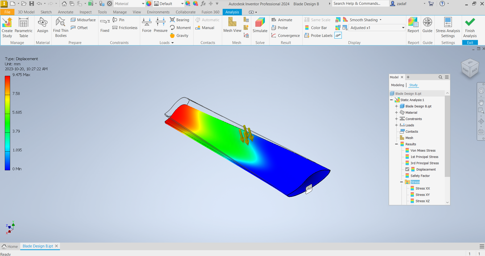

Brief Overview:
To address the distinctive challenges of a less developed village with constrained access, we crafted a turbine blade utilizing Computer-Aided Design (CAD) to enhance its efficiency. The design prioritized simplicity, durability, and the use of locally-sourced materials, ensuring straightforward production and maintenance. Through collaborative initiatives, our goal was to efficiently tap into renewable energy, providing a sustainable and accessible solution to the village's power requirements.
Project Contributions:
As the project manager for this initiative, I played a pivotal role in addressing the distinctive challenges faced by the less developed village with constrained access. Leveraging my expertise, I focused on optimizing the turbine blade's efficiency through Computer-Aided Design (CAD). Utilizing my skills in AutoCAD, I meticulously designed a turbine that prioritized simplicity, durability, and the use of locally-sourced materials.
One of my primary responsibilities was to choose the perfect material for the turbine blade, considering factors such as availability, cost-effectiveness, and durability. This involved a thorough analysis of locally-sourced materials to ensure not only straightforward production but also easy maintenance, aligning with our commitment to sustainability.
 Figure 2 - Granta Material Selection Chart
Figure 2 - Granta Material Selection Chart
Reflections:
Embarking on the challenge of contributing to green technology through turbine blade design, my focus narrows to the intricacies of renewable energy technology. When contemplating the scenario "Renewable Energy for a Large Population," I find myself pondering how to tailor the design to meet the specific needs of providing energy on a large scale. The significance of effective communication and collaboration becomes clear, recognizing that individual assessments are intricately linked to a team-based learning approach. As I progress through milestones, such as conceptual design and material selection using tools like ANSYS-Granta EduPack, there's a sense of curiosity surrounding the impactful choice of materials on turbine blade performance. Shifting into CAD modeling with Autodesk-Inventor, I acknowledge the captivating transformation of my design from concept to a tangible model. Emphasizing, "It's not just about the technical aspects but also about personal and collaborative growth," underscores my reflection on the final deliverables. This dialogic reflection proves invaluable for continuous improvement, deepening my understanding of challenges and enhancing the peer-learning experience.